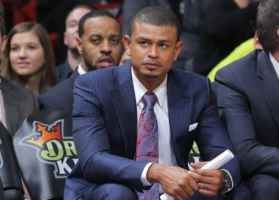

Эрл Уотсон не хочет, чтобы игроки «Финикса» общались с соперниками
в «Твиттере»

Главный тренер «Финикс Санз» Эрл Уотсон
Главному тренеру «Финикс Санз» Эрлу
Уотсону не нравится, что его подопечные подписыва
ются на страницы игроков других команд в социальной
сети «Твиттер». Об этом сообщил журналист The Ari
zona Republic Пол Коро.
Уотсон считает, что баскетболисты «Финикса»
должны с уважением относиться к оппонентам, но не
восхищаться ими.
Напомним, что Эрл сменил Джеффа Хорнасека на посту нас
тавника «Санз» в минувшем сезоне.
Стоит отметить, что Уотсон является вторым самым молодым
главным тренером в НБА.
«Оклахома-Сити» обсуждает продление контрактов с Виктором Оладипо
и Стивеном Адамсом
Как пишет инсайдер Yahoo! Sports Эдриан Война
ровски, «Оклахома-Сити»
обсуждает продление контрактов с защитником
Виктором Оладипо и центровым Стивеном
Адамсом.
По информации источников, Оладипо может получить
контракт приблизительно на 80 миллионов долла
ров, Адамс – на 100 миллионов.
Оладипо и Адамс выступают на контрактах новичков.
Дедлайн на продление подобных соглашений – 31 ок
тября.
Экс-игрок «Лейкерс» Энтони Браун выбран под 1-м номером драфта
D-лиги
В воскресенье прошел драфт D-лиги. Как пишет
ESPN, под 1-м номером фарм-командой
«Орландо» был выбран экс-игрок «Лейкерс» Эн
тони Браун.
Браун стал последним игроком, отчисленным «Лейкерс»
перед началом сезона. Выбранный во втором раунде драф
та НБА 2015 года форвард сыграл в шести предсезонных матчах,
набирая в среднем 3,2 очка и 1,7 подбора.
Еще одним игроком первого раунда драфта Лиги разви
тия с опытом игры в НБА стал выбранный под 4-м номером Трэвис
Лесли.
Во втором раунде драфта был выбран еще один бывший игрок
«Лейкерс», 2-кратный чемпион НБА Шэннон Браун.
Жоаким Ноа: «Выступать в форме «Нью-Йорка» – это сверхважно
для меня»
Центровой «Нью-Йорка» Жоаким Ноа признался, что
испытал особенные чувства, проведя свой первый официа
льный домашний матч за команду родного города.
«Поскольку здесь проходило мое детство, я много раз
был на этой арене в качестве болельщика. Уже то, что я высту
паю в этой форме – это сверхважно для меня. Я просто хочу быть
частью чего-то особенного»,
– цитирует Ноа ESPN.com.
Джеймс Харден заработал решающие штрафные в игре с «Мэвс»
за 0,1 секунды до сирены
Разыгрывающий «Хьюстона» Джеймс Харден
стал автором решающего попадания в матче с «Далла
сом» (83:82).
За 0,1 секунды до финальной сирены Харден в проходе зарабо
тал право на два штрафных броска, один из которых принес «Ро
кетс» победу.
За 39 минут Харден реализовал 8 из 23 с игры и 9 из 12 с линии, набрав
28 очков, 7 подборов и 7 передач при 8 потерях.
В концовке встречи Харден подвернул левую лодыжку, но позже
заявил, что восстановится к матчу с «Кавальерс» во вторник.